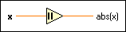

Absolute Value Function
Owning Palette: Numeric VIs and Functions
Requires: Base Development System
Returns the absolute value of the input.
The connector pane displays the default data types for this polymorphic function.

 Add to the block diagram Add to the block diagram |
 Find on the palette Find on the palette |